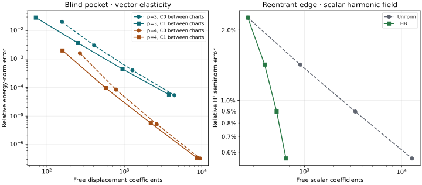
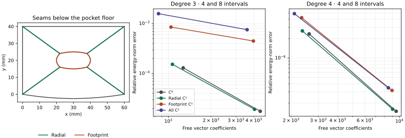

Selecting displacement continuity
A designer can keep the same geometric partition and change the displacement field on its interfaces. The relevant comparison depends on what is held fixed: the supporting maps, the integration cells, or the number of free displacement coefficients.
Accuracy per unknown on the cube
The original cubic sine test on an affine cube missed its prospective equal-cell criterion. At equal dimension (343 scalar functions), its measured C² energy-norm error was 3.69 times smaller than C⁰. The larger C² solve at 1,331 functions measured 0.00036113. Both statements use the original solutions.
A second frozen study prescribes a Gaussian varying along all three directions, multiplied by height to satisfy the clamp. Each row below compares the same number of free vector displacement coefficients in isotropic 3D elasticity. Errors are relative energy norms.
Free vector DOFs |
Spans/axis C⁰/C² |
C⁰ error |
C² error |
Ratio |
|---|---|---|---|---|
6,084 |
4 / 10 |
0.00555250 |
0.00073965 |
7.51 |
11,520 |
5 / 13 |
0.00288067 |
0.00032368 |
8.90 |
C² uses more integration cells at both dimensions. The result measures accuracy per unknown for this smooth solution on affine geometry. Native measurements and protocols.
Refinement across construction supports
The historical all-lateral C¹ pocket with 21.33% energy error used curved biquadratic section charts, one element per source patch. For the separate bilinear control, the kernel rebuilds five section maps from the polygonal sketch: a footprint surrounded by four trapezoids. Only the four trapezoids continue above the pocket floor. The comparison retains all nine solids, the slanted interfaces and the free pocket walls.
Both vector spaces use physical height-linear displacements in all three components with a bottom clamp. The manufactured vertical displacement is quintic in x and linear in height. Each chart has interior C¹ knots in both tests. Only the interchart conditions vary. The C¹ solver identifies the trace first and matches a transverse physical gradient on each edge span with exact rational arithmetic. Clearing the two bilinear Jacobian determinants gives a polynomial of degree at most p+1, so p+2 distinct evaluations determine the whole identity. Endpoints participate in the same system as the interior. The notes give the measured h-sequences and a separate scalar section problem. Pocket vector protocol.
For cubic fields the measured energy orders on the final doubling are 2.916 (C⁰) and 2.979 (C¹). For quartics they are 4.009 and 4.052. At eight subdivisions cubic C¹ uses 3,780 free vector DOFs and has relative energy error 5.64e−5; cubic C⁰ uses 4,440 and gives 5.34e−5. The observed rate recovers on the bilinear control. The original curved-pocket campaign initially measured one coarse level. The curved-pocket section below reports the subsequent refinements.

Each point is an independent native solve. The left panel counts free vector coefficients. The right panel counts free scalar coefficients.
Local refinement near a reentrant edge
The original strip’s fine interior region is 8 by 4 by 4 spans. A cubic basis function occupies four consecutive fine spans in each direction, so only five fine supports fit wholly inside. A larger marked region or a mark touching an open boundary changes this count. Truncation and nesting can be tested by comparing exact Bernstein coefficients on a common fine partition. Multilevel locality also depends on the levels of basis functions that can be nonzero on each integration cell. Giannelli, Jüttler and Speleers, THB-splines. Buffa and Giannelli, Adaptive isogeometric methods with hierarchical splines.
On the prescribed three-chart L section, the scalar harmonic field varies as radius to the power 2/3. At the third local level the THB field has 645 free scalar coefficients and 0.564334% relative H¹ seminorm error. Uniform refinement to the same finest span width has 12,805 free coefficients and 0.564310% error. A separate finest-grid Galerkin assembly recovers both results, including the effect of mass projection of the exterior trace. The fixed corner boxes qualify one multilevel schedule. THB and uniform convergence histories.
The curved gallery pocket

The section curves are extracted from the nine-map gallery model. At z=7 mm, the central footprint is solid material; above the z=14 mm floor it is the open pocket, and its curved boundary is a free wall. The radial-only field constrains all eight radial faces (four at each level) to physical C¹; the four footprint joins retain C⁰ continuity.
The gallery pocket has nine polynomial maps of degree (2,2,1). Its bottom section consists of five footprints. Four radial interfaces continue above the floor, where the curved footprint of the void disappears. An interface in a section and a shared face in the solid therefore have different counts.
The four distinct radial seams admit linear AS-G¹ gluing factors. The four seams around the footprint require coprime quadratic transverse factors for these parametrizations. On the east footprint seam, in the inward-derivative convention, their quotient is proportional to (36t² − 36t + 19)/(16t² − 16t − 6). The polynomials have no common root. This obstructs a pair of linear gluing factors without a change of chart. A globally smooth physical field can still satisfy the physical gradient conditions on that seam. An approximation experiment must establish how many such fields the discrete space retains as the intervals are subdivided.
The source volume is 48,976 mm³ and the floor area is 512/3 mm². Integrating polynomial moments along the oriented quadratic boundaries supplies an independent reference for strain energy and the separate work of body, top, floor and wall loads. On this curved pocket a physical quadratic displacement times height pulls back to a field of degree at most (4,4,1). It supplies a reproduction test for a quartic section field, and a convergence test for a cubic one.
Curved-pocket measurements and replay.

On the quintic manufactured field, the last observed cubic energy order is 2.89 with C⁰, 2.99 with only the radial seams constrained, 0.93 with only the footprint constrained and 1.07 with all eight seams constrained. The corresponding quartic orders are 3.98, 4.03, 3.75 and 3.82. Each segment joins two measured refinements. The chart partition and loads are identical.